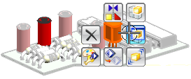

将一个组件设为显示部件
当您想在一个组件上工作，但又不是在关联装配中，那么您就可以将组件设为显示部件。
-
选择首选项→装配。
-
在装配首选项对话框中的工作部件组下方，确保保持复选框被选中，然后点击确定。
保持首选项将决定当父项成为显示部件时哪个部件会成为工作部件。
-
在图形窗口中，在 des03_laser_t1_13节点上按住右键并从推断式工具条中选择设为显示部件。

对于当前的工作部件，设为显示部件在推断式工具条中不可用，在那种情况下，您必须使用装配导航器快捷菜单。